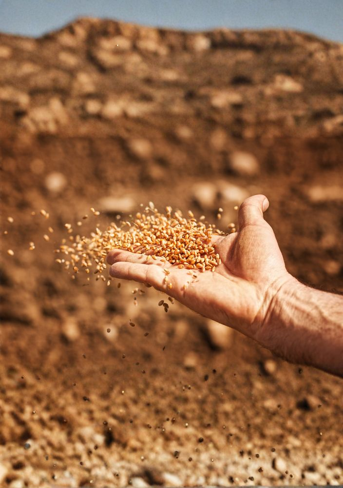
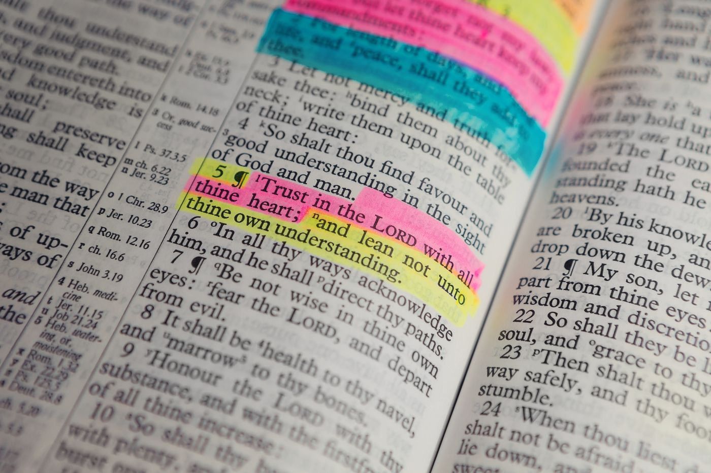

“Hij nu Die zaad verschaft aan de zaaier en brood tot voedsel, zal ook uw zaad vermeerderen en de vruchten van uw gerechtigheid doen toenemen.”
2 Kor. 9:10
Maarten Vroegindeweij:
“We hebben het op ons hart gekregen om geld op te halen voor de verspreiding van Gods woord, of wel: evangelisatie, in Nederland.”
Zou u dit document door willen lezen? (5 min.)“Zaad verschaffen aan zaaiers, zodat er gezaaid kan worden.”
En dat zaad verschaffen is 2-ledig:
-
Wie in Mij blijft en Ik in hem, die draagt veel vrucht, want zonder Mij kunt u niets doen.
Joh. 15:5Want uit Hem en door Hem en tot Hem zijn alle dingen.
Rom. 11:36Zonder Hem kunnen wij en hebben wij dus niks. En zo zei Job:
Naakt ben ik uit de schoot van mijn moeder gekomen, en naakt zal ik daarheen terugkeren. De HEER heeft gegeven en de HEER heeft genomen; de Naam van de HEER zij geloofd.
Job 1:21 -
Maar als de Heere ons werk, bijvoorbeeld financieel, dan zegent, dan mogen wij geld, als zijnde zaad, op onze beurt doorverschaffen aan werkers in de wijngaard van de Heer, die daarmee uit mogen gaan om ‘het evangelie te zaaien’.
Dit is de gelijkenis: het zaad is het Woord van God.
Luk. 8:11
Wat hiermee niet wordt bedoeld, is dat ons vermogen meer moet worden omdat wij geven. Dat is welvaartsevangelie.
Concreet:
De taak van een christen luidt: Laat uw licht zo schijnen voor de mensen…
Matth. 5:16, maar… ongetwijfeld bent u, net als wij, eigenlijk ‘gewoon’ te druk om invulling te geven aan deze taak. We zijn druk met ons werk, misschien zelfs kerkwerk, ons gezin en komen vaak tijd te kort, zo ook om concreet licht te verspreiden in richting van de ongelovige mensen om ons heen.
Nu zijn er mensen die de tijd wel hebben, alleen… moeten zij op hun beurt financieel gesteund worden om dit te kunnen doen. En zo zijn we als verschillende ledematen; handen, voeten, oren, sprekers, luisteraars, toch één lichaam? Want zoals wij in één lichaam veel leden hebben… zo zijn wij, hoewel velen, één lichaam in Christus.
Rom. 12:4–5 In ieder geval: Het oog kan niet tegen de hand zeggen: Ik heb u niet nodig.
1 Kor. 12:21
Het project heet ‘Zaad voor de Zaaier’ en hieronder willen wij u meer vertellen over wie wij zijn, over wie deze mensen zijn en hoe we hen, met uw hulp, willen helpen om aan de slag te gaan in de Wijngaard van de Heer.

Bijbelteksten die we konden vinden over: de manier van ‘geven’, arbeiders en oogst.
2 Korintiërs 9:7
Laat ieder doen zoals hij zich in zijn hart voorgenomen heeft, niet met tegenzin of uit dwang, want God heeft een blijmoedige gever lief.
Veel zaad betekent veel evangelisatiemateriaal, wat wij alleen maar hoeven te zaaien, waarna de Heilige Geest water kan geven / het toe kan passen.
Hand. 16:14
En een zekere vrouw, van wie de naam Lydia was… de Heere opende haar hart, zodat zij acht gaf op wat door Paulus gesproken werd.
Joh. 6:63
De Geest is het Die levend maakt; het vlees heeft geen enkel nut.
1 Kor. 3:6–7
Ik heb geplant, Apollos heeft begoten, maar God gaf de groei. Zo is dan noch hij die plant iets, noch hij die begiet, maar God Die de groei geeft.

Wie zijn wij / zij?
Wie zijn wij?
Daar moet het eigenlijk zo min mogelijk over gaan, want ons verlangen is juist dat de Heere en Zijn werk centraal staat. Maar wij zijn Maarten Vroegindeweij & Stefan de Heer.

Beide ondernemers, met zakelijk gezien, onze Bedrijfsleider (hoofdletter ‘B’) in de hemel. Een Bedrijfsleider die we écht niet kunnen missen, want zelf zijn wij maar kwetsbare mensen, die altijd afhankelijk blijven van Zijn kracht om het werk te doen én vervolgens van Zijn zegen op het werk. Maar als de zegen van de Heere op het werk mag rusten, en we financieel vruchten mogen plukken, dan vinden we het ‘inmiddels’ ook mooi om dat geld als het ware terug te geven aan de Heere, waarna het als zaad mag functioneren in Zijn ‘akkers’, of mag dienen voor schapen die nog toegebracht moeten worden tot Zijn kudde. Ik heb nog andere schapen, die van deze stal niet zijn; deze moet Ik ook toebrengen, en zij zullen Mijn stem horen; en het zal worden één kudde en één Herder.
Joh. 10:16 Of denk aan de zaaier die het zaad (het woord) zaait, maar dat op/in verschillende plekken (harten) valt. Dit is nu de gelijkenis: Het zaad is het ‘Woord’ Gods… de boze komt… en neemt het ‘Woord’ weg uit hun ‘hart’… ook zijn er… die met een eerlijk en goed ‘hart’ het Woord, gehoord hebbende, bewaren.
Luc. 8:4–15
Onderaan deze pagina vindt u meer over onze grondslag, visie en uitgangspunten.
Wie zijn zij?
De mensen waar we het over hebben zijn mensen die door de Heilige Geest in hun hart zijn geraakt, een Bijbelschool zijn gaan volgen, en na afronding het verlangen hebben hun leven in dienst van de Heere te stellen. Zij willen dit doen door zich parttime, of fulltime in te zetten voor evangelisatie op onze Nederlandse straten, of op andere manieren; en dat is zoals u wellicht weet hard nodig.
Maar zoals u ook zult begrijpen, is een dergelijke bediening financieel niet haalbaar zonder ondersteuning. Het project ‘Zaad voor de Zaaier’ wil in samenwerking met stichting ‘Hebron Missie’, stichting ‘Werkers in de Wijngaard’, én u, deze ‘werkers’ uitstoten in de Wijngaard van de Heere. Hieronder het plan van aanpak.
Plan van aanpak:
-
Stichting Hebron Missie
met daarin bijbelschool Philadelphia en Gospel Image

Functie:
De Heilige Geest trekt mensen naar de Bijbelschool, waar ze worden opgeleid en uitgerust. Hier wordt een selectie gemaakt van bekwame mensen die uitgezonden kunnen én willen worden.
www.hebronmissie.nl -
Stichting ‘Werkers in de Wijngaard’

Functie:
Deze stichting ondersteunt allerhande evangelisatieprojecten en het project ‘Zaad voor de Zaaier’ zal 1 van die projecten worden. Na het volgen van de Bijbelschool kunnen mensen een ‘zaaier’ of ‘werker’ worden in de Wijngaard van de Heer.
www.werkersindewijngaard.nl -
‘Project’ ‘Zaad voor de Zaaier’

Functie:
Als personen, na het volgen van de Bijbelschool, graag aan de slag willen in de Wijngaard van de Heer, dan kan dat parttime of fulltime via dit project dat is ondergebracht in stichting Werkers in de Wijngaard. Uw gift zal hun financiële ondersteuning worden tijdens hun bediening.
werkersindewijngaard.nl/zaadvoordezaaier (beoogd adres van deze pagina)